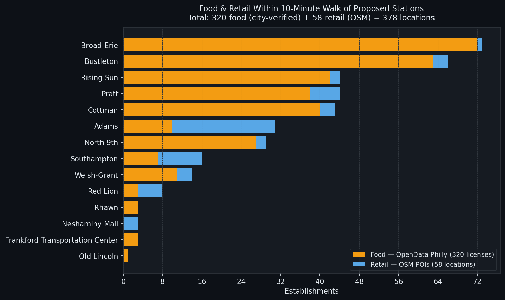
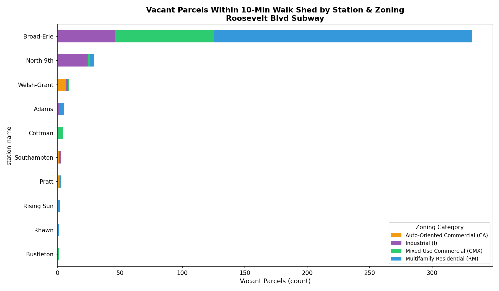

Economic Development Analysis
↓ scroll to explore
Mapping the existing retail and food ecosystem within walking distance of each proposed station to understand current commercial vitality along the corridor.

Identifying vacant parcels near each proposed station and their zoning — revealing where transit-oriented development could realistically occur.

Broad-Erie, Bustleton, Rising Sun, and Cottman already have significant food and retail activity — transit would amplify an existing commercial ecosystem.
389 development-potential vacant parcels totaling ~61 acres sit within 10 minutes of a proposed station — a strong signal for developer interest.
Stations like Adams and North 9th have large industrial parcels prime for mixed-use redevelopment, even with less current commercial activity nearby.
CMX and RM-zoned vacant parcels near transit are the highest-value opportunities — the interactive maps let stakeholders filter to exactly those sites.